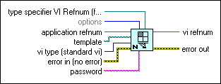
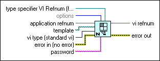

New VI Function
Owning Palette: VI Scripting VI and Functions
Requires: VI Scripting
Creates and returns a reference to a new VI.

 Add to the block diagram Add to the block diagram |
 Find on the palette Find on the palette |
Owning Palette: VI Scripting VI and Functions
Requires: VI Scripting
Creates and returns a reference to a new VI.

| Add to the block diagram |
Find on the palette |
 |
type specifier VI Refnum (for type only) determines the data type of the new VI that this function returns in vi refnum. If you wire a reference to a pre-existing VI to this parameter, LabVIEW assigns the data type of that VI to the new VI. Note that LabVIEW does not copy the contents of the pre-existing VI into the new VI. If you do not wire data to this input, LabVIEW returns a Generic VI reference for vi refnum. |
||||||||||||||||||||
 |
options is a bit set that specifies two optional characteristics of the new VI reference that this function creates. The default is 0x0. options can be a combination of the following values.
|
||||||||||||||||||||
|
application refnum is a reference to the LabVIEW application instance in which you want this function to create the new VI. By default, the function creates the new VI in the same application instance that called the New VI function. If you wire a reference to a remote application instance to application refnum, LabVIEW creates the new VI in the remote application instance. | ||||||||||||||||||||
 |
template is a path to a template VI whose contents you want LabVIEW to copy into the new VI that this function creates. When you create a new VI from a template by wiring a path to the template input, you avoid the need to create each template object individually in the new VI. You can modify small parts of the code that was copied from the template into the new VI to create a customized version of the template. To make modifications, you must obtain references to objects in the copied code. Then you can set properties or invoke methods to change the objects. |
||||||||||||||||||||
 |
vi type specifies the exact type of VI that this function returns as vi refnum. vi type must be at least as specific as type specifier VI Refnum (for type only).
|
||||||||||||||||||||
 |
error in describes error conditions that occur before this node runs. This input provides standard error in functionality. | ||||||||||||||||||||
 |
password is the password for the VI specified by the template parameter. If template is not password protected, LabVIEW ignores password. If template is password protected but you do not wire password, LabVIEW copies only the parts of the template VI that are not password protected into the new VI. | ||||||||||||||||||||
 |
vi refnum is a reference to the newly created VI. If LabVIEW fails to create a new VI, vi refnum returns Not A Refnum. | ||||||||||||||||||||
 |
error out contains error information. This output provides standard error out functionality. |
By default, this function does not show the front panel or block diagram of the VI that it creates. Although you can inspect or modify the new VI without showing the front panel or block diagram, you can use the following VI properties and method to display and position the new VI: